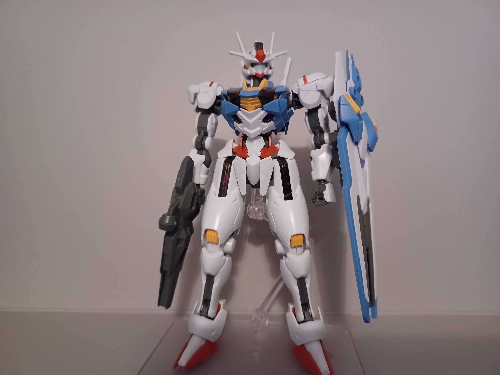
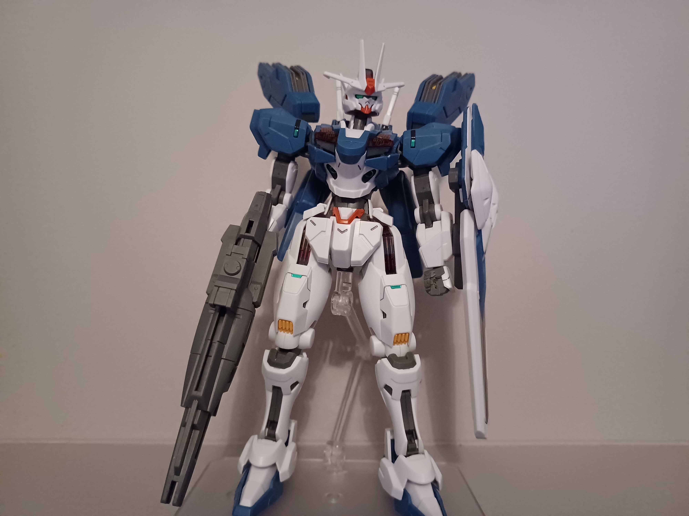

Bandain 1/144 High Grade mallisarja tarjoaa edullisia mutta täsmällisia pienoismalleja.
Hg pienoismallit ovat simppelimpiä kuin Rg mallit ja hyödyntävät tarroja saadakseen täsmällisen tuloksen.
High Grade mallisarja tarjoaa laajan ja helposti muokattavan valikoiman mecha malleja jotka on helppo rakentaa muutamassa päivässä.
ASW-G-66 Gundam Kimaris Vidar on animesarjasta Mobile Suit Gundam Iron-Blooded Orphans

XVX-016 Gundam Aerial ja XVX-016RN Gundam Aerial Rebuild ovat animesarjasta Mobile Suit Gundam the Witch from Mercury
 